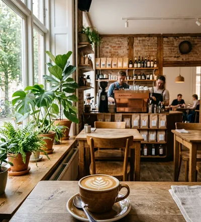

Atualização Colaborativa
Contato e Sugestões
Indique uma cafeteria real no Rio Grande do Sul ou comunique ajustes de endereço, telefone ou horário de atendimento.

Envie uma solicitação de inclusão ou correção
Para preservar a exatidão do diretório, utilize o formulário abaixo informando a cidade do Rio Grande do Sul e os canais públicos oficiais do estabelecimento para verificação.